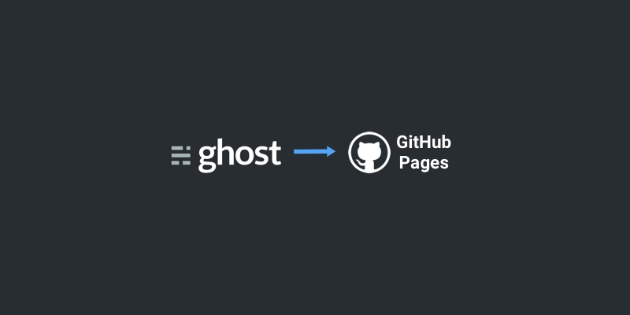

曾經玩博客玩過WordPress、z-bolg,但這些都是基於PHP的，也自己基於nodejs做過一版詩集網站收集自己的詩集，但是成本太大，一是要有一定的技術要求，二是要有運行nodejs的平台，雖然找到了免費的heroku，但是訪問速度太慢了，想想不是有免費的gitpage博客嗎，雖然是靜態的，依然可以在本地將ghost博客靜態話后上傳到git，想來也是很好的。於是這個技術博客誕生了，以前的博客也會慢慢遷移過來，也許某段時間后該鏈接就無法訪問了；
為什麼選擇ghost做博客？
1.模板簡單易修改還挺好看； 2.發表文章在瀏覽器中即可，不用像hexo和Jekyll那樣還得單獨打開一個markdown編輯器編輯文章； 3.同樣支持gitpage，而且即便以後想要發佈到帶後台的服務器也可以完美遷移；
在决定使用 Ghost 之后，接下来的事情就是寻找如何转换的解决方案了
解决方案：开源项目 Buster，但也是个大坑
Buster 的原理其实蛮简单：用 Python 语言写的一个文件路径遍历器。通过调用 wget 把 Ghost 中用到的图片、字体、CSS、JavaScript 等静态资源复制到一个新的文件夹（同时此文件夹可以作为 Github Pages 的 repo），然后相应地修改 HTML 文件内引用的静态文件的路径，使之最终生效。
然而，原作者已经停止更新该项目2年多了，以致对新版的 Ghost 支持很差，使用中会出现很多问题，例如 RSS 订阅功能失效、博文题图无法成功获取并复制到新目录导致图片引用失效等等…… 在该项目问题讨论板块中一番搜索后，发现有新的 fork 可用，由 Misiur 维护（其实也很久没更新过了），访问地址如下：
Misiur's Buster Github Repo: https://github.com/Misiur/buster
在之后的教程中也将使用这一版本，期间还碰到了其它问题，也折腾了我很长时间。最终通过编写 Bash 脚本，解决了各种奇葩的 bug，不过 RSS 订阅功能还是有问题，不得不暂时放弃。本教程适用于 Mac，代码仅在 El Capitan 测试。
- 安装 Homebrew
这里对 Homebrew 的使用方法不作详细介绍，请自行阅读用户手册。运行 Ghost 需要 node.js，但对其版本的要求是 LTS，因此对应的版本是 4.2.0；其次，在通过 buster 进行处理的时候需要用到 wget，也一并通过 Homebrew 安装即可。
brew install homebrew/versions/node4-lts
brew install wget --with-iri
之后即可在 Ghost 官网下载最新版本，解压后进入 Ghost 所在目录中运行 Terminal：
npm install --production
进行安装，之后使用
npm start
启动 Ghost，后台默认地址为 http://127.0.0.1:2368/
- 安装 Buster（第一个大坑）
Buster 是基于 Python2 开发的，如果你的電腦是Python2，可以不用看這一步，目前的主流是 Python3，已经更新至 3.5.1 版，因此比较好的方法是借助 pyenv 进行多版本管理，安装通过 Homebrew 完成。
brew install pyenv
注意安装后需要正确设置 PATH 及 .bash_profile 才能正常工作，参见 repo: https://github.com/yyuu/pyenv 中的说明。之后通过 pyenv 安装 2.7.11 及 3.5.1 两个版本的 python 即可，全局设为 3.5.1。
pyenv install 2.7.11
pyenv install 3.5.1
pyenv global 3.5.1
進入您的博客很目錄,將當前設置為2.7.11版本
pyenv local 2.7.11
该目录中运行的 python 版本将设为 2.7.11，用以兼容 Buster，而不会影响其它目录 python3 的运行。之后运行：
sudo pip install git+https://github.com/Misiur/buster
安装修改版的 Buster，这里请注意安装后不要升级 pip 中 Buster 依赖的组件，否则会提示版本不匹配。
之后的事情就是自己写博客了，研究 Ghost 的结构和自定义主题的代码。
3.通过 Buster 导出静态网站
所有已发布的文章可以通过 Buster 导出到 static 目录中，也可以预览导出的网站。
buster generate --domain=http://127.0.0.1:2368
// 這一步可能會提示錯誤，原因是沒有 wget，安裝下即可
brew install wget --with-iri
# Open http://localhost:9000 to preview generated site
buster preview
接下來就是打開靜態博客觀看了這裡會提示錯誤，原因是css，js等靜態資源找不到，因為ghost默認加了hash版本號，很多大神做了腳本來修復，但是實際上不用這麼麻煩，只需將版本號去掉即可；
4.修復靜態資源找不到
代開core/server/helpers/utils.js這個文件夾按代碼示例子即可：
var _ = require('lodash'),
utils;
utils = {
// 2016-10-30 17:39:33 去掉版本控制，博客靜態化時能找到靜態資源
// assetTemplate: _.template('<%= source %>?v=<%= version %>'),
// linkTemplate: _.template('<a href="<%= url %>"><%= text %></a>'),
// scriptTemplate: _.template('<script src="<%= source %>?v=<%= version %>"></script>'),
// inputTemplate: _.template('<input class="<%= className %>" type="<%= type %>" name="<%= name %>" <%= extras %> />'),
assetTemplate: _.template('<%= source %>'),
linkTemplate: _.template('<a href="<%= url %>"><%= text %></a>'),
scriptTemplate: _.template('<script src="<%= source %>"></script>'),
inputTemplate: _.template('<input class="<%= className %>" type="<%= type %>" name="<%= name %>" <%= extras %> />'),
isProduction: process.env.NODE_ENV === 'production'
};
module.exports = utils;
到這裡差不多了，但是如果你使用默認主題或者其他主題可能css文件里引入了iconfont字體也加了版本號，請自行去除；
- 结语
经过一番折腾之后，终于可以愉快地发博客了。如果你想在 GitHub Pages 上建站，又想用 Ghost 来写博客，希望我的这篇心得对你有所帮助。如遇到問題可以電郵或者微博問我；
未完待續...
todo:
1.編寫工具讓其靜態博客文件自動提交到github，並且支持多博客化；
2.關於多博客化：將每個博客單獨push到對應的倉庫下建立對應文件夾存放即可